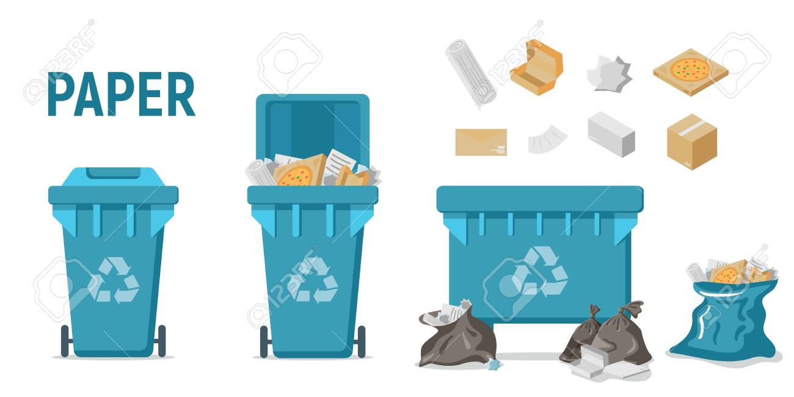
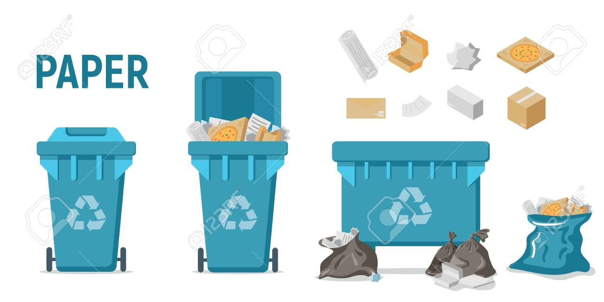

La poubelle bleu
La poubelle verte est souvent utilisée pour le verre. Bouteilles, bocaux et pots en verre doivent y être déposés propres et sans couvercles.
 🏠page d'accueilLa poubelle verte est souvent utilisée pour le verre. Bouteilles, bocaux et pots en verre doivent y être déposés propres et sans couvercles.
 🏠page d'accueil